The calculation of projection matrix given 3D and 2D correspondence is trivial. The scale of the projection matrix is normalized such that P3,4 = 1. Therefore, at least 11 points are required to solve this linear equation. If more than 11 points are given, simply use least square solution. The estimated projection matrix is:
[ 0.7679 -0.4938 -0.0234 0.0067
-0.0852 -0.0915 -0.9065 -0.0878
0.1827 0.2988 -0.0742 1.0000 ]
with total residual = 0.0445
The camera center in in the 3D world coordinate can also be computed trivially given the 3x4 projection matrix. The estimated camera center is:
[ -1.5126, -2.3517, 0.2827 ]
The results are visualized in the following figures:
| 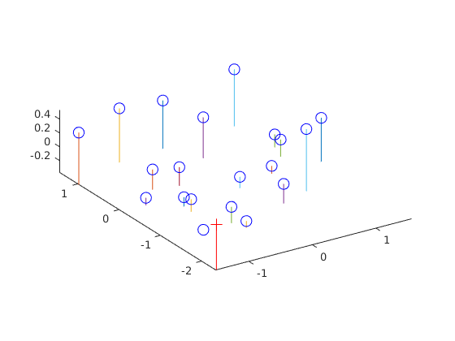 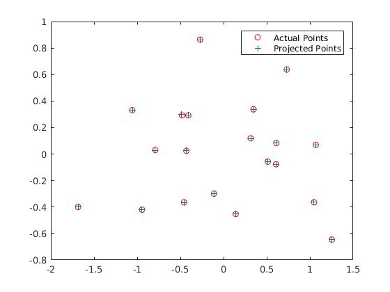 |
The fundamental matrix can also be solved trivially. In order to avoid numerical instability, the coordinates of matching points are normalized such that they are zeros mean and unit variance. Do not forget to multiply the estimated fundamental matrix by the normalization transform to recover it back to original coordinates
The A matrix for solving the linear equation without normalization is:
After normalization:
The epipolar lines for both images are visualized as follows:
| 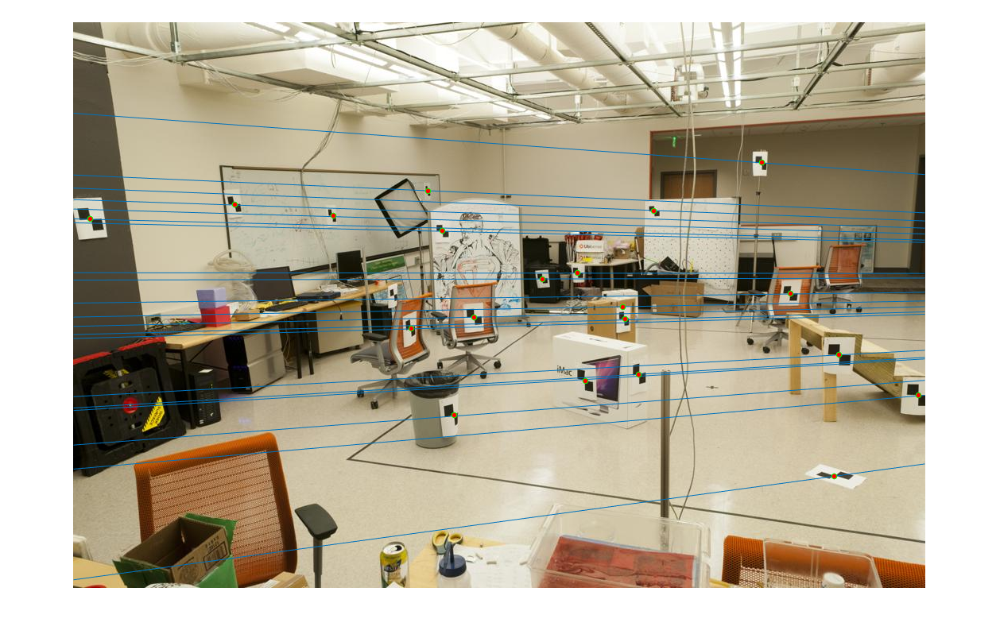 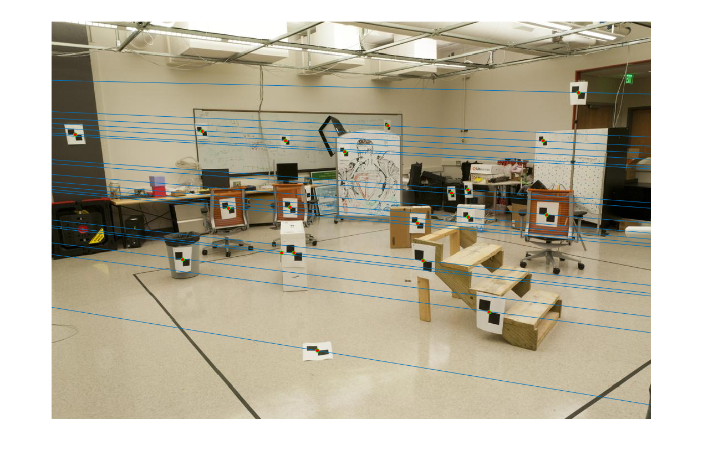 |
The basic steps for RANSAC model fitting are as follows:
Parameters: N: number of iterations = 50,000 Eps: inlier threshold = 0.01 1. Randomly sample 8 points, which is the minimum number of points for computing the fundamental matrix. 2. Compute the fundamental matrix given these 8 points. 3. Count the number of support points for this model. In this case, for those satisfy |xa' F xb| < eps are counted as support points. 4. Iterate step 1-3 for N times and get the model with most support points. *5. Run the whole RANSAC algorithms again using only the inliers of the the top model.
Note that step 5 is optional but it helps refine the estimated model.
Here are results of the 4 test images:
| 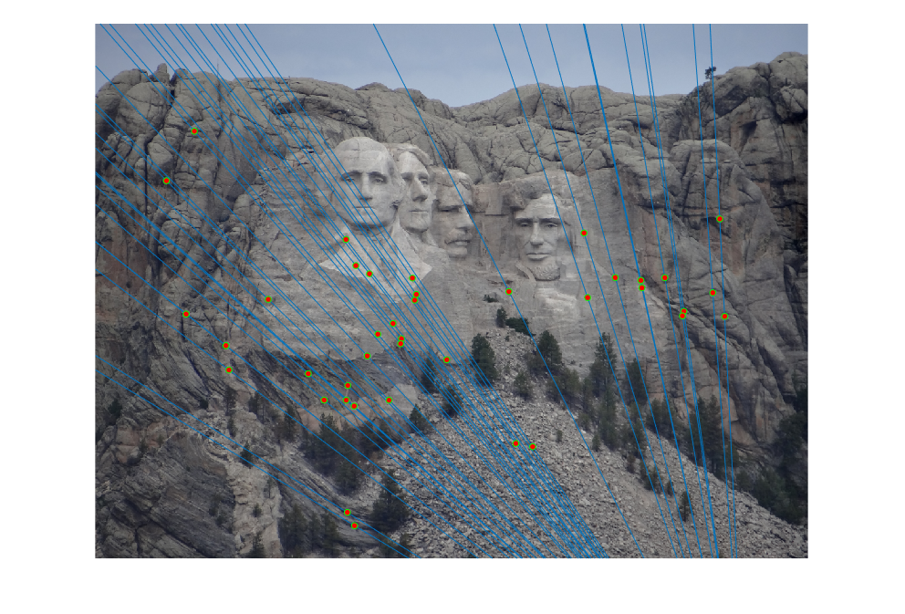 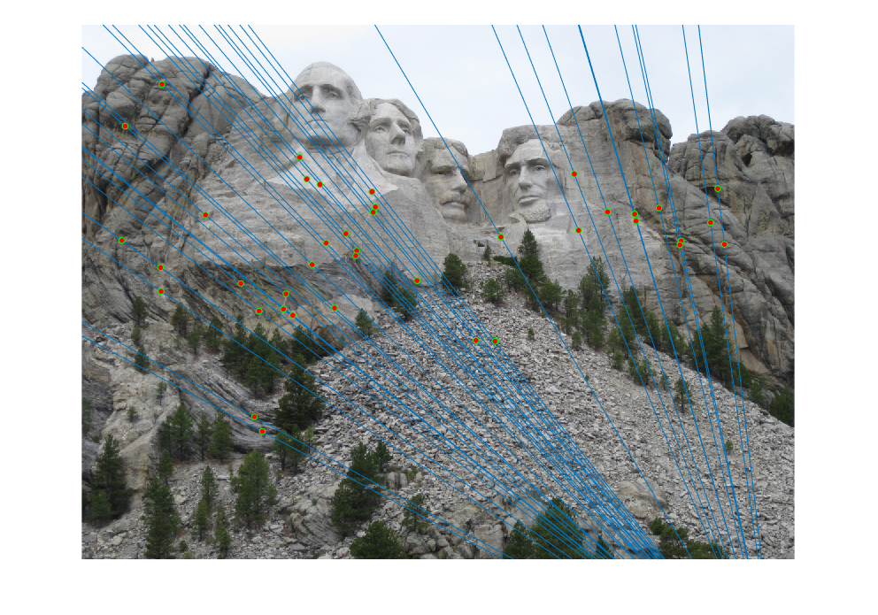 |
| 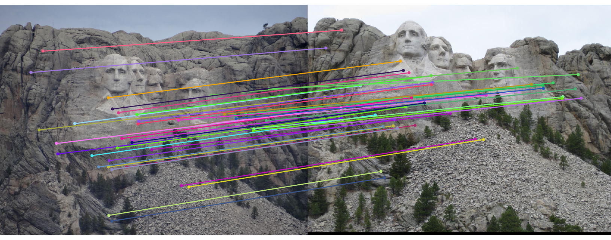 |
| 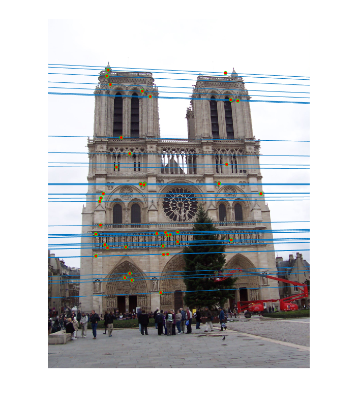 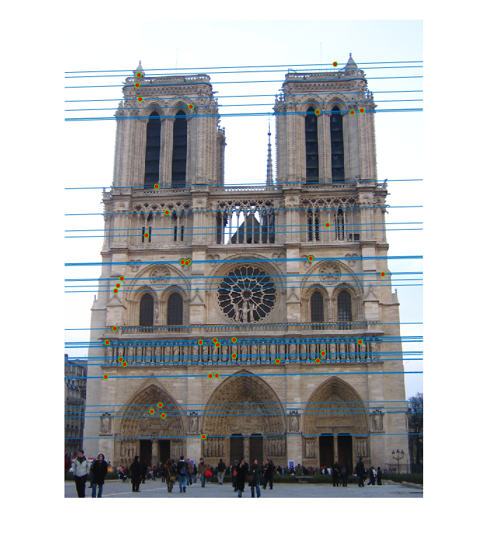 |
| 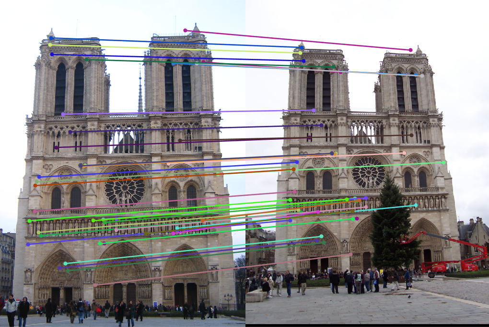 |
| 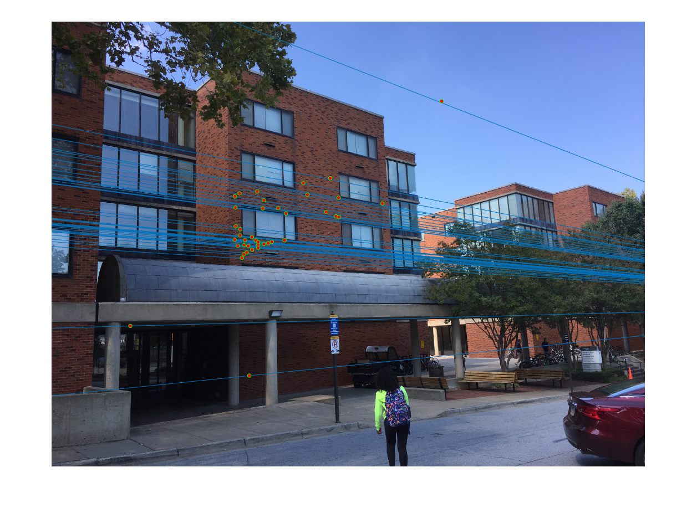 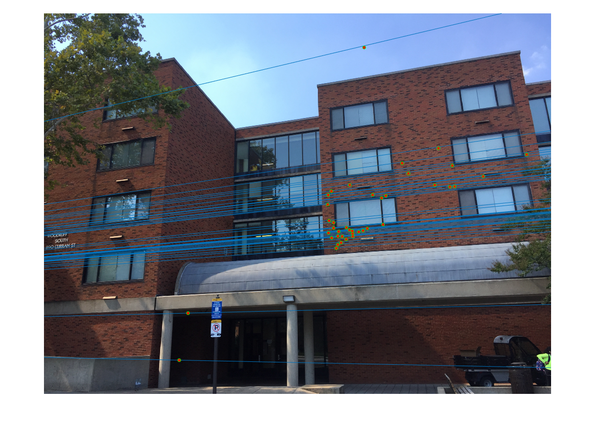 |
| 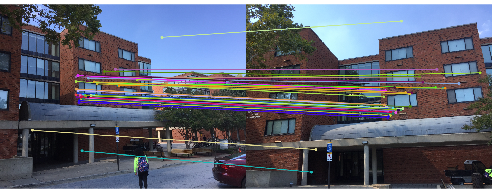 |
| 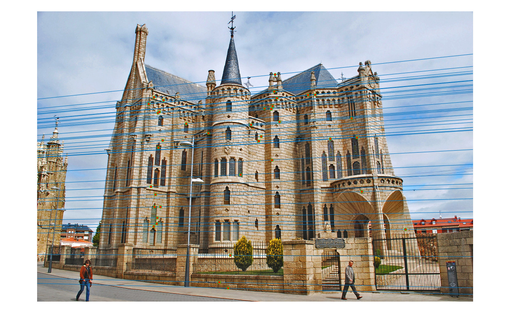 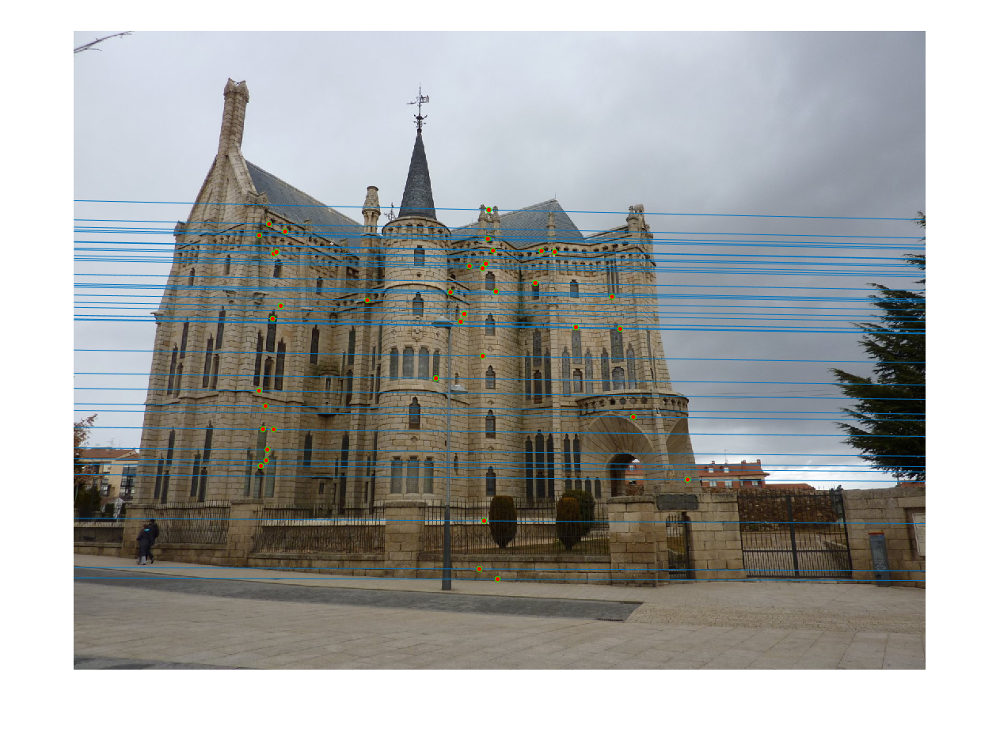 |
| 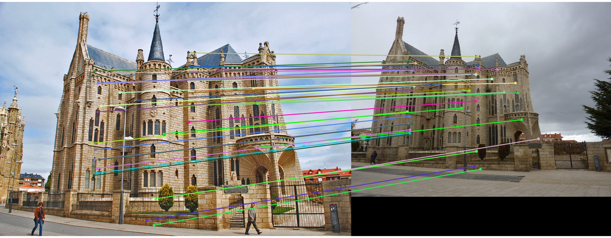 |